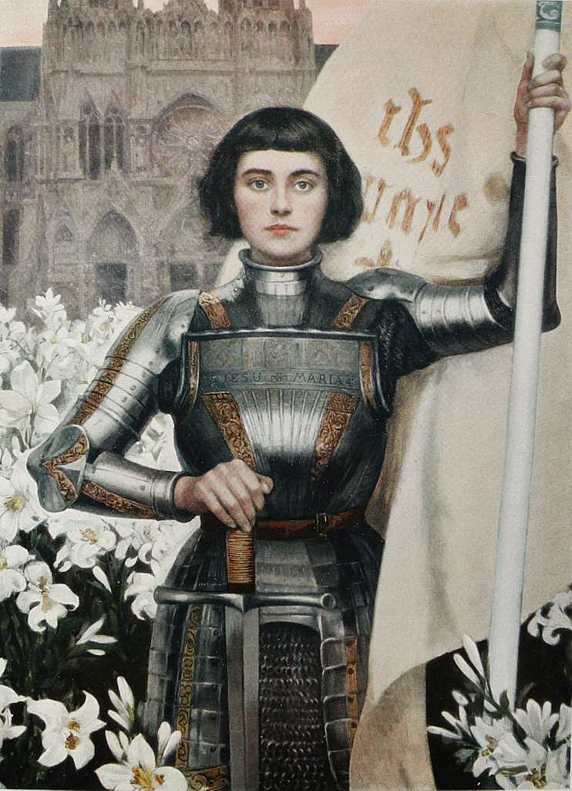

1412 – 30 May 1431
Born in a small village in the north-east France
In 1428, she requested to be taken to Charles VII of France
In 1429, she was sent to the siege of Orleans at the age of seventeen
She insisted that the forces should advance promptly toward Reims
October 1429, she was sent to attack the territory of Perrinet Gressart
May 1430, she was captured at Margny
Joan was put on trial for heresy in Rouen on 9 January 1431
There is evidence that the trial records were falsified.
At about the age of nineteen, Joan was executed on 30 May 1431.
On May 16th, 1920 she was canonized as a saint.
Signature